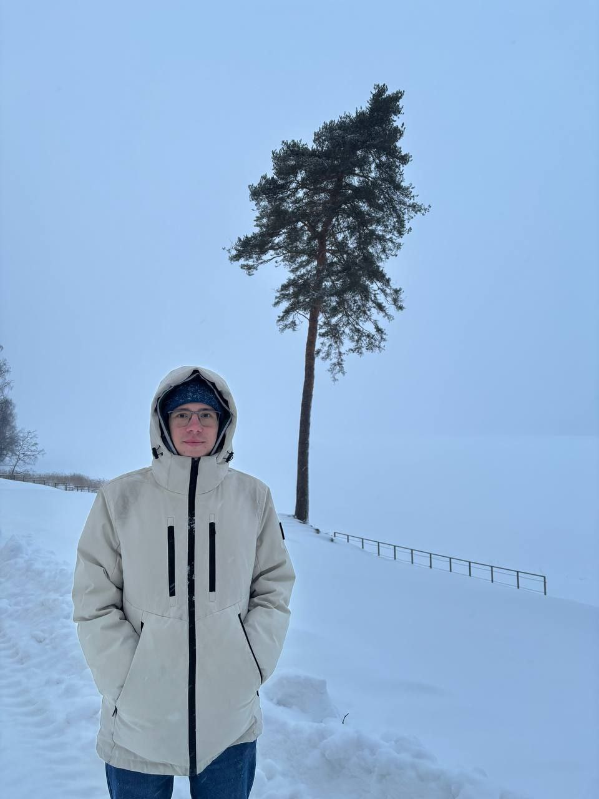

Pavel Gubkin
Hi, my name is Pavel Gubkin, I am a mathematician at the Leonhard Euler Institute in Saint Petersburg, Russia. Recently, under the supervision of Roman Bessonov, I've completed my PhD studies in the Saint Petersburg Department of Steklov Mathematical Institute. My thesis was called On the spectral theory of Dirac operators with square summable potentials, see this PDMI page.
Lis of my papers and preprints can be found on google scholar, arxiv or ORCID.

I also teach extra maths classes in Presidential Physics and Mathematics Lyceum No. 239 preparing high school kids for different mathematical olympiads. Here are the notes on different courses that we discussed: dissection problem and other area related topics, Lagrange multipliers and calculus of variations, number theory.
- Резонансы одномерного оператора Шредингера, 06.04.26, Санкт-Петербургский семинар по теории операторов и теории функций, ПОМИ РАН, запись доклада, конспект;
- Решение спектральной задачи модели Кронига-Пенни с помощью алгоритма Шура, 20.11.25, 9-th St. Petersburg Youth Conference in Probability and Mathematical Physics, слайды;
- Операторы Дирака с осциллирующими потенциалами, 07.11.25, Семинар кафедры теории функций и функционального анализа Московского Государственного университета, конспект;
- Stability of Schur’s algorithm, 16.09.25, Дни анализа в Сириусе: аппроксимация, оптимизация, восстановление данных и смежные вопросы, слайды;
- The spectral problem for the Kronig–Penney model of the Dirac operators in terms of Schur’s algorithm, 27.06.25, Спектральная теория и математическая физика, посвященной памяти М.Ш.Бирмана, слайды;
- Решение уравнения Абловица–Ладика с помощью алгоритма Шура, 11.08.24, IV Конференция математических центров России, слайды;